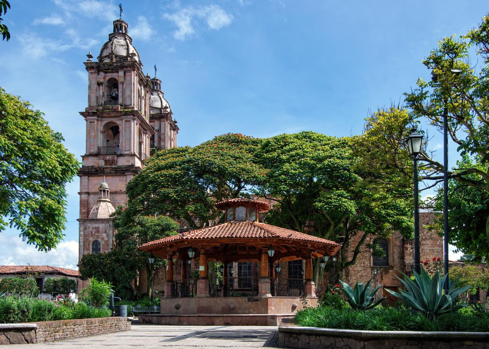
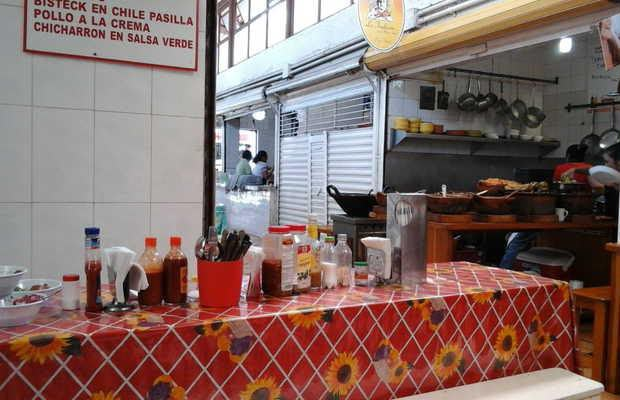

El kiosco se encuentra en el centro de Valle de Bravo, dentro del jardín principal. Es uno de los lugares más representativos del municipio. Es un punto de reunión para habitantes y visitantes. Está rodeado de jardines, bancas y comercios. En sus alrededores se realizan actividades culturales y eventos. Es un lugar donde las familias pueden pasear y descansar. Representa una parte importante de la identidad y tradición del pueblo.

La iglesia central es conocida como la Parroquia de San Francisco de Asís y se encuentra cerca del jardín principal. Es uno de los edificios religiosos más importantes de Valle de Bravo. Su arquitectura destaca por su estilo tradicional y sus detalles históricos. Está dedicada a San Francisco de Asís. Es un lugar donde se realizan misas, celebraciones religiosas y fiestas patronales. Forma parte del patrimonio histórico y cultural del municipio.
El mercado municipal es uno de los espacios comerciales más importantes de Valle de Bravo, donde habitantes y turistas pueden encontrar diferentes productos. Se venden frutas, verduras, carnes y otros alimentos. Cuenta con puestos de comida típica de la región. Es posible encontrar productos locales y artículos tradicionales. Ayuda a la economía de comerciantes y productores. Conserva las costumbres gastronómicas y comerciales del municipio.
